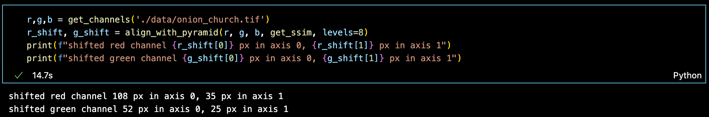
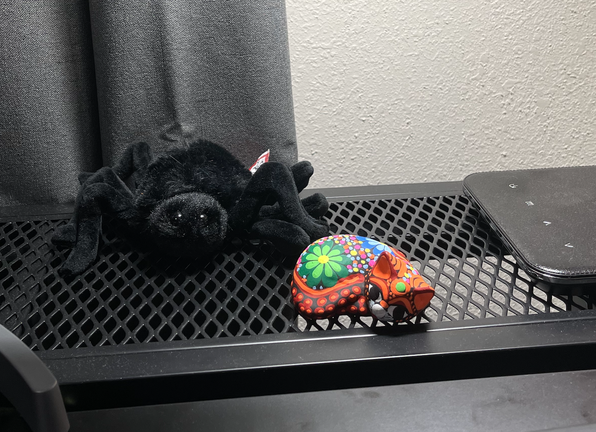

I divided the height/width of the image by decreasing powers of 2 for each level. Each iteration would displace the query image 1 px up, down, left, and right, then pick the shift which yielded the highest metric.
Getting the metric involved:
- applying the shift with np.roll
- cropping the image to the inner 0.8*W x 0.8*H px since the border was interfering with the metrics
- applying the metric function
At first I tried MSE & NCC; flop. girl whatever I went back online. I found the Strutural Similarity Index Measure (and its scikit-image documentation), which gave me pretty good results.
^(this was the code that generated that plot)->
This worked fine (~15sec/TIF). Still lot slower than the phase correlation approach, so the results I'll show are from phase correlation.
(unrelated, a gift my friend got me)